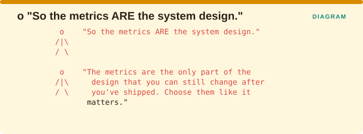

Measuring Retrieval › Closing: What This Book Establishes
Across this book and roughly 130 verified citations, one claim runs underneath everything else.
Evaluation is not a reporting activity. It is a design activity.
Clarke et al. put it most sharply in 2008, observing that evaluation measures act as objective functions to be optimized. Whatever you measure, your system will be shaped toward, and whatever you fail to measure, it will be free to sacrifice in order to move the numbers you are watching.
Redundancy reached 22% in a production medical RAG pipeline in 2026 because nobody was measuring it. The reranker was doing its job correctly, optimizing the objectives it had been given, and duplication was not among them.

The figure states the conclusion as plainly as it can be stated. The metrics are the part of the design you can still change after you have shipped, which is why choosing them deserves the same care as choosing an architecture.
This book has gaps, and naming them is more useful than concealing them.
| Limit | Detail |
|---|---|
| The mutation-kill-rate gap | Named and unresolved |
| Judge drift | Operational protocol available; validated metric pending |
| Online RAG evaluation | Source interleaving is available; generated-answer methods remain incomplete |
| Multi-turn RAG | Session is the right unit; almost everything reports per-turn |
Measuring Retrieval · Madhava Gaikwad · First edition, September 2026